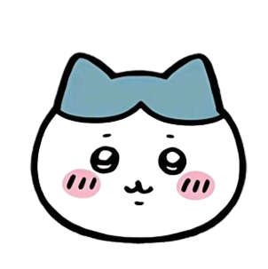

I like to write program like html, python, etc. After graduation, I want to be a computer engineer.我很喜歡寫程式像是html, python...等。畢業後，我想成為電腦工程師
I join a wind band at school. I play the flute but I'm not very good. I practice it hard. because I want to be a great flutist in the future. I hope I can do it.我參加了學校的管樂團。我會吹長笛但不是很厲害。我很努力練習因為我未來想成為很厲害的長笛手。我希望我可以做到。
I like to play mahjong with friends. We sometimes plat it after school.我喜歡和朋友打麻將。我們有時候放學會打。
好像沒什麼困擾，就是每天都跟朋友玩，希望天天都能很開心，當我們遇到功課不會的地方就會互相教學，只是這週段考週一直跑去麻將館打麻將哈哈哈。感情方面，就最近遇到一個不好的人，阿但是分手了，挺難過的但至少離開了。
唯一的問題就是最近跟一個同學在討論升學，很糾結到底是要顓寺考統測去大學還是要專五後去二技，唯一就只有這個困擾而已。
